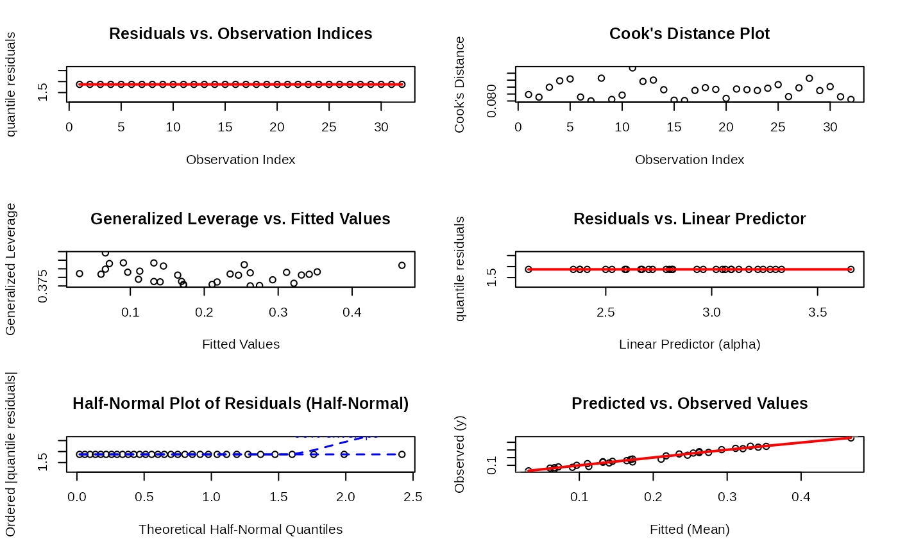
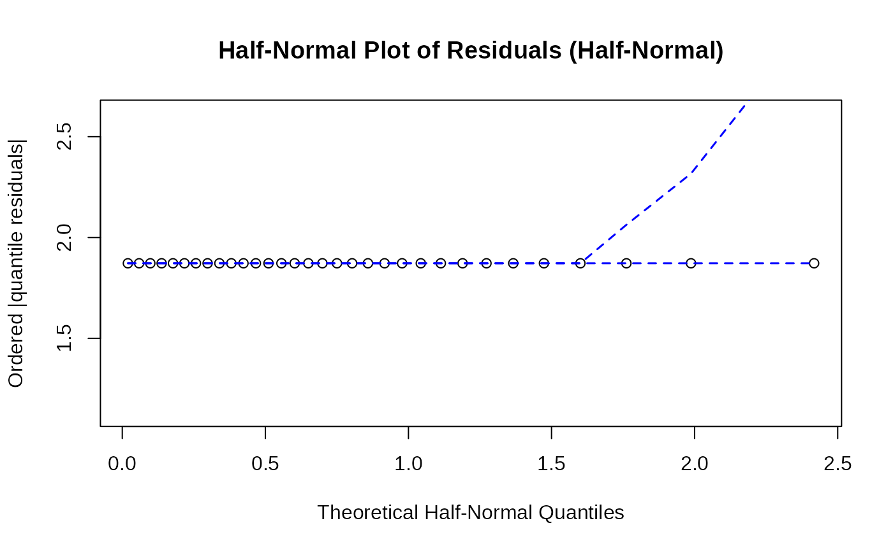

Fit Generalized Kumaraswamy Regression Models
gkwreg.RdFits regression models using the Generalized Kumaraswamy (GKw) family of
distributions for response variables strictly bounded in the interval (0, 1).
The function allows modeling parameters from all seven submodels of the GKw
family as functions of predictors using appropriate link functions. Estimation
is performed using Maximum Likelihood via the TMB (Template Model Builder) package.
Requires the Formula and TMB packages.
Usage
gkwreg(
formula,
data,
family = c("gkw", "bkw", "kkw", "ekw", "mc", "kw", "beta"),
link = NULL,
link_scale = NULL,
start = NULL,
fixed = NULL,
method = c("nlminb", "BFGS", "Nelder-Mead", "CG", "SANN", "L-BFGS-B"),
hessian = TRUE,
plot = TRUE,
conf.level = 0.95,
optimizer.control = list(),
subset = NULL,
weights = NULL,
offset = NULL,
na.action = getOption("na.action"),
contrasts = NULL,
x = FALSE,
y = TRUE,
model = TRUE,
silent = TRUE,
...
)Arguments
- formula
An object of class
Formula(or one that can be coerced to that class). It should be structured asy ~ model_alpha | model_beta | model_gamma | model_delta | model_lambda, whereyis the response variable and eachmodel_*part specifies the linear predictor for the corresponding parameter (\(\alpha\), \(\beta\), \(\gamma\), \(\delta\), \(\lambda\)). If a part is omitted or specified as~ 1or., an intercept-only model is used for that parameter. See Details for parameter correspondence in subfamilies.- data
A data frame containing the variables specified in the
formula.- family
A character string specifying the desired distribution family. Defaults to
"gkw". Supported families are:"gkw": Generalized Kumaraswamy (5 parameters: \(\alpha, \beta, \gamma, \delta, \lambda\))"bkw": Beta-Kumaraswamy (4 parameters: \(\alpha, \beta, \gamma, \delta\); \(\lambda = 1\) fixed)"kkw": Kumaraswamy-Kumaraswamy (4 parameters: \(\alpha, \beta, \delta, \lambda\); \(\gamma = 1\) fixed)"ekw": Exponentiated Kumaraswamy (3 parameters: \(\alpha, \beta, \lambda\); \(\gamma = 1, \delta = 0\) fixed)"mc": McDonald / Beta Power (3 parameters: \(\gamma, \delta, \lambda\); \(\alpha = 1, \beta = 1\) fixed)"kw": Kumaraswamy (2 parameters: \(\alpha, \beta\); \(\gamma = 1, \delta = 0, \lambda = 1\) fixed)"beta": Beta distribution (2 parameters: \(\gamma, \delta\); \(\alpha = 1, \beta = 1, \lambda = 1\) fixed)
- link
Either a single character string specifying the same link function for all relevant parameters, or a named list specifying the link function for each modeled parameter (e.g.,
list(alpha = "log", beta = "log", delta = "logit")). Defaults are"log"for \(\alpha, \beta, \gamma, \lambda\) (parameters > 0) and"logit"for \(\delta\) (parameter in (0, 1)). Supported link functions are:"log": logarithmic link, maps \((0, \infty)\) to \((-\infty, \infty)\)"identity": identity link, no transformation"inverse": inverse link, maps \(x\) to \(1/x\)"sqrt": square root link, maps \(x\) to \(\sqrt{x}\)"inverse-square": inverse squared link, maps \(x\) to \(1/x^2\)"logit": logistic link, maps \((0, 1)\) to \((-\infty, \infty)\)"probit": probit link, using normal CDF"cloglog": complementary log-log"cauchy": Cauchy link, using Cauchy CDF
- link_scale
Either a single numeric value specifying the same scale for all link functions, or a named list specifying the scale for each parameter's link function (e.g.,
list(alpha = 10, beta = 5, delta = 1)). The scale affects how the link function transforms the linear predictor. Default is 10 for most parameters and 1 for parameters using probability-type links (such asdelta). For probability-type links (logit, probit, cloglog, cauchy), smaller values produce more extreme transformations.- start
An optional named list providing initial values for the regression coefficients. Parameter names should match the distribution parameters (alpha, beta, etc.), and values should be vectors corresponding to the coefficients in the respective linear predictors (including intercept). If
NULL(default), suitable starting values are automatically determined based on global parameter estimates.- fixed
An optional named list specifying parameters or coefficients to be held fixed at specific values during estimation. Currently not fully implemented.
- method
Character string specifying the optimization algorithm to use. Options are
"nlminb"(default, usingnlminb),"BFGS","Nelder-Mead","CG","SANN", or"L-BFGS-B". If"nlminb"is selected, R'snlminbfunction is used; otherwise, R'soptimfunction is used with the specified method.- hessian
Logical. If
TRUE(default), the Hessian matrix is computed viasdreportto obtain standard errors and the covariance matrix of the estimated coefficients. Setting toFALSEspeeds up fitting but prevents calculation of standard errors and confidence intervals.- plot
Logical. If
TRUE(default), enables the generation of diagnostic plots when calling the genericplot()function on the fitted object. Actual plotting is handled by theplot.gkwregmethod.- conf.level
Numeric. The confidence level (1 - alpha) for constructing confidence intervals for the parameters. Default is 0.95. Used only if
hessian = TRUE.- optimizer.control
A list of control parameters passed directly to the chosen optimizer (
nlminboroptim). See their respective documentation for details.- subset
An optional vector specifying a subset of observations from
datato be used in the fitting process.- weights
An optional vector of prior weights (e.g., frequency weights) to be used in the fitting process. Should be
NULLor a numeric vector of non-negative values.- offset
An optional numeric vector or matrix specifying an a priori known component to be included on the scale of the linear predictor for each parameter. If a vector, it's applied to the predictor of the first parameter in the standard order (\(\alpha\)). If a matrix, columns must correspond to parameters in the order \(\alpha, \beta, \gamma, \delta, \lambda\).
- na.action
A function which indicates what should happen when the data contain
NAs. The default (na.fail) stops ifNAs are present. Other options includena.omitorna.exclude.- contrasts
An optional list specifying the contrasts to be used for factor variables in the model. See the
contrasts.argofmodel.matrix.default.- x
Logical. If
TRUE, the list of model matrices (one for each modeled parameter) is returned as componentxof the fitted object. DefaultFALSE.- y
Logical. If
TRUE(default), the response variable (after processing byna.action,subset) is returned as componenty.- model
Logical. If
TRUE(default), the model frame (containing all variables used fromdata) is returned as componentmodel.- silent
Logical. If
TRUE(default), suppresses progress messages from TMB compilation and optimization. Set toFALSEfor verbose output.- ...
Additional arguments, currently unused or passed down to internal methods (potentially).
Value
An object of class gkwreg. This is a list containing the
following components:
- call
The matched function call.
- family
The specified distribution family string.
- formula
The
Formulaobject used.- coefficients
A named vector of estimated regression coefficients.
- fitted.values
Vector of estimated means (expected values) of the response.
- residuals
Vector of response residuals (observed - fitted mean).
- fitted_parameters
List containing the estimated mean value for each distribution parameter (\(\alpha, \beta, \gamma, \delta, \lambda\)).
- parameter_vectors
List containing vectors of the estimated parameters (\(\alpha, \beta, \gamma, \delta, \lambda\)) for each observation, evaluated on the link scale.
- link
List of link functions used for each parameter.
- param_names
Character vector of names of the parameters modeled by the family.
- fixed_params
Named list indicating which parameters are fixed by the family definition.
- loglik
The maximized log-likelihood value.
- aic
Akaike Information Criterion.
- bic
Bayesian Information Criterion.
- deviance
The deviance ( -2 * loglik ).
- df.residual
Residual degrees of freedom (nobs - npar).
- nobs
Number of observations used in the fit.
- npar
Total number of estimated parameters (coefficients).
- vcov
The variance-covariance matrix of the coefficients (if
hessian = TRUE).- se
Standard errors of the coefficients (if
hessian = TRUE).- convergence
Convergence code from the optimizer (0 typically indicates success).
- message
Convergence message from the optimizer.
- iterations
Number of iterations used by the optimizer.
- rmse
Root Mean Squared Error of response residuals.
- efron_r2
Efron's pseudo R-squared.
- mean_absolute_error
Mean Absolute Error of response residuals.
- x
List of model matrices (if
x = TRUE).- y
The response vector (if
y = TRUE).- model
The model frame (if
model = TRUE).- tmb_object
The raw object returned by
MakeADFun.
Details
The gkwreg function provides a regression framework for the Generalized
Kumaraswamy (GKw) family and its submodels, extending density estimation
to include covariates. The response variable must be strictly bounded in the
(0, 1) interval.
Model Specification:
The extended Formula syntax is crucial for specifying
potentially different linear predictors for each relevant distribution parameter.
The parameters (\(\alpha, \beta, \gamma, \delta, \lambda\)) correspond sequentially
to the parts of the formula separated by |. For subfamilies where some
parameters are fixed by definition (see family argument), the corresponding
parts of the formula are automatically ignored. For example, in a family = "kw"
model, only the first two parts (for \(\alpha\) and \(\beta\)) are relevant.
Parameter Constraints and Link Functions:
The parameters \(\alpha, \beta, \gamma, \lambda\) are constrained to be positive,
while \(\delta\) is constrained to the interval (0, 1). The default link functions
("log" for positive parameters, "logit" for \(\delta\)) ensure these
constraints during estimation. Users can specify alternative link functions suitable
for the parameter's domain via the link argument.
Link Scales:
The link_scale parameter allows users to control how aggressively the link
function transforms the linear predictor. For probability-type links (logit, probit,
cloglog, cauchy), smaller values (e.g., 1) produce more extreme transformations,
while larger values (e.g., 10) produce more gradual transformations. For continuous
parameters, scale values control the sensitivity of the transformation.
Families and Parameters:
The function automatically handles parameter fixing based on the chosen family:
GKw: All 5 parameters (\(\alpha, \beta, \gamma, \delta, \lambda\)) modeled.
BKw: Models \(\alpha, \beta, \gamma, \delta\); fixes \(\lambda = 1\).
KKw: Models \(\alpha, \beta, \delta, \lambda\); fixes \(\gamma = 1\).
EKw: Models \(\alpha, \beta, \lambda\); fixes \(\gamma = 1, \delta = 0\).
Mc (McDonald): Models \(\gamma, \delta, \lambda\); fixes \(\alpha = 1, \beta = 1\).
Kw (Kumaraswamy): Models \(\alpha, \beta\); fixes \(\gamma = 1, \delta = 0, \lambda = 1\).
Beta: Models \(\gamma, \delta\); fixes \(\alpha = 1, \beta = 1, \lambda = 1\). This parameterization corresponds to the standard Beta distribution with shape1 = \(\gamma\) and shape2 = \(\delta\).
Estimation Engine:
Maximum Likelihood Estimation (MLE) is performed using C++ templates via the
TMB package, which provides automatic differentiation and efficient
optimization capabilities. The specific TMB template used depends on the chosen family.
Optimizer Method (method argument):
"nlminb": Uses R's built-instats::nlminboptimizer. Good for problems with box constraints. Default option."Nelder-Mead": Uses R'sstats::optimwith the Nelder-Mead simplex algorithm, which doesn't require derivatives."BFGS": Uses R'sstats::optimwith the BFGS quasi-Newton method for unconstrained optimization."CG": Uses R'sstats::optimwith conjugate gradients method for unconstrained optimization."SANN": Uses R'sstats::optimwith simulated annealing, a global optimization method useful for problems with multiple local minima."L-BFGS-B": Uses R'sstats::optimwith the limited-memory BFGS method with box constraints.
References
Kumaraswamy, P. (1980). A generalized probability density function for double-bounded random processes. Journal of Hydrology, 46(1-2), 79-88.
Cordeiro, G. M., & de Castro, M. (2011). A new family of generalized distributions. Journal of Statistical Computation and Simulation, 81(7), 883-898.
Ferrari, S. L. P., & Cribari-Neto, F. (2004). Beta regression for modelling rates and proportions. Journal of Applied Statistics, 31(7), 799-815.
Kristensen, K., Nielsen, A., Berg, C. W., Skaug, H., & Bell, B. M. (2016). TMB: Automatic Differentiation and Laplace Approximation. Journal of Statistical Software, 70(5), 1-21. (Underlying TMB package)
Zeileis, A., Kleiber, C., Jackman, S. (2008). Regression Models for Count Data in R. Journal of Statistical Software, 27(8), 1-25.
Smithson, M., & Verkuilen, J. (2006). A Better Lemon Squeezer? Maximum-Likelihood Regression with Beta-Distributed Dependent Variables. Psychological Methods, 11(1), 54–71.
Examples
# \donttest{
## -------------------------------------------------------------------------
## 1. Real-world Case Studies
## -------------------------------------------------------------------------
## Example 1: Food Expenditure Data
# Load required package
require(gkwreg)
# Get FoodExpenditure data and create response variable 'y' as proportion of income spent on food
food_data <- get_bounded_datasets("FoodExpenditure")
food_data <- within(food_data, {
y <- food / income
})
# Define formula: y depends on 'persons' with 'income' as predictor for second parameter
formu_fe <- y ~ persons | income
# Fit Kumaraswamy model with log link for both parameters
kw_model <- gkwreg(formu_fe, food_data,
family = "kw",
link = rep("log", 2), method = "nlminb"
)
# Display model summary and diagnostics
summary(kw_model)
#>
#> Generalized Kumaraswamy Regression Model Summary
#>
#> Family: kw
#>
#> Call:
#> gkwreg(formula = formu_fe, data = food_data, family = "kw", link = rep("log",
#> 2), method = "nlminb")
#>
#> Residuals:
#> Min Q1.25% Median Mean Q3.75% Max
#> -0.1668 -0.0417 0.0098 -0.0047 0.0396 0.1527
#>
#> Coefficients:
#> Estimate Std. Error z value Pr(>|z|)
#> alpha:(Intercept) 1.26876 0.14206 8.931 < 2e-16 ***
#> alpha:persons 0.07210 0.01895 3.805 0.000142 ***
#> beta:(Intercept) 3.21312 0.63879 5.030 4.9e-07 ***
#> beta:income 0.03623 0.00922 3.930 8.5e-05 ***
#> ---
#> Signif. codes: 0 ‘***’ 0.001 ‘**’ 0.01 ‘*’ 0.05 ‘.’ 0.1 ‘ ’ 1
#>
#> Confidence intervals (95%):
#> 3% 98%
#> alpha:(Intercept) 0.9903 1.5472
#> alpha:persons 0.0350 0.1092
#> beta:(Intercept) 1.9611 4.4651
#> beta:income 0.0182 0.0543
#>
#> Link functions:
#> alpha: log
#> beta: log
#>
#> Fitted parameter means:
#> alpha: 4.638
#> beta: 244.4
#> gamma: 1
#> delta: 0
#> lambda: 1
#>
#> Model fit statistics:
#> Number of observations: 38
#> Number of parameters: 4
#> Residual degrees of freedom: 34
#> Log-likelihood: 46.34
#> AIC: -84.69
#> BIC: -78.14
#> RMSE: 0.07442
#> Efron's R2: 0.4465
#> Mean Absolute Error: 0.05784
#>
#> Convergence status: Successful
#> Iterations: 19
#>
plot(kw_model, use_ggplot = TRUE, arrange_plots = TRUE, sub.caption = "")
#> Simulating envelope ( 100 iterations): .......... Done!

## Example 2: Gasoline Yield Data
# Load GasolineYield dataset
gasoline_data <- get_bounded_datasets("GasolineYield")
# Formula: yield depends on batch and temperature
# First part (for alpha/gamma) includes batch and temp
# Second part (for beta/delta/phi) includes only temp
formu_gy <- yield ~ batch + temp | temp
# Fit Kumaraswamy model with log link and BFGS optimization
kw_model_gas <- gkwreg(formu_gy, gasoline_data,
family = "kw",
link = rep("log", 2), method = "BFGS"
)
#> Warning: NaNs produced
# Display results
summary(kw_model_gas)
#>
#> Generalized Kumaraswamy Regression Model Summary
#>
#> Family: kw
#>
#> Call:
#> gkwreg(formula = formu_gy, data = gasoline_data, family = "kw",
#> link = rep("log", 2), method = "BFGS")
#>
#> Residuals:
#> Min Q1.25% Median Mean Q3.75% Max
#> -0.0309 -0.0102 0.0024 -0.0026 0.0074 0.0170
#>
#> Coefficients:
#> Estimate Std. Error z value Pr(>|z|)
#> alpha:(Intercept) 0.533007 0.034347 15.519 < 2e-16 ***
#> alpha:batch1 0.845384 0.035441 23.853 < 2e-16 ***
#> alpha:batch2 0.598695 0.037369 16.021 < 2e-16 ***
#> alpha:batch3 0.716293 0.034919 20.513 < 2e-16 ***
#> alpha:batch4 0.474241 0.032395 14.639 < 2e-16 ***
#> alpha:batch5 0.521558 0.033263 15.680 < 2e-16 ***
#> alpha:batch6 0.456962 0.033757 13.537 < 2e-16 ***
#> alpha:batch7 0.230536 0.031345 7.355 1.91e-13 ***
#> alpha:batch8 0.206234 0.033397 6.175 6.61e-10 ***
#> alpha:batch9 0.146342 0.037266 3.927 8.60e-05 ***
#> alpha:temp 0.005231 NaN NaN NaN
#> beta:(Intercept) 25.517159 1.558379 16.374 < 2e-16 ***
#> beta:temp -0.001718 0.003379 -0.508 0.611
#> ---
#> Signif. codes: 0 ‘***’ 0.001 ‘**’ 0.01 ‘*’ 0.05 ‘.’ 0.1 ‘ ’ 1
#>
#> Confidence intervals (95%):
#> 3% 98%
#> alpha:(Intercept) 0.4657 0.6003
#> alpha:batch1 0.7759 0.9148
#> alpha:batch2 0.5255 0.6719
#> alpha:batch3 0.6479 0.7847
#> alpha:batch4 0.4107 0.5377
#> alpha:batch5 0.4564 0.5868
#> alpha:batch6 0.3908 0.5231
#> alpha:batch7 0.1691 0.2920
#> alpha:batch8 0.1408 0.2717
#> alpha:batch9 0.0733 0.2194
#> alpha:temp NaN NaN
#> beta:(Intercept) 22.4628 28.5715
#> beta:temp -0.0083 0.0049
#>
#> Link functions:
#> alpha: log
#> beta: log
#>
#> Fitted parameter means:
#> alpha: 15.91
#> beta: 4.985e+10
#> gamma: 1
#> delta: 0
#> lambda: 1
#>
#> Model fit statistics:
#> Number of observations: 32
#> Number of parameters: 13
#> Residual degrees of freedom: 19
#> Log-likelihood: 96.48
#> AIC: -167
#> BIC: -147.9
#> RMSE: 0.01287
#> Efron's R2: 0.9851
#> Mean Absolute Error: 0.01026
#>
#> Convergence status: Successful
#> Iterations: 352
#>
plot(kw_model_gas, use_ggplot = TRUE, arrange_plots = TRUE, sub.caption = "")
#> Simulating envelope ( 100 iterations): .......... Done!
## Example 3: SDAC Cancer Data
# Load cancer survival dataset
sdac_data <- get_bounded_datasets("sdac")
# Formula: relative cumulative density ~ age adjustment + chemotherapy
formu_sd <- rcd ~ ageadj + chemo
# Fit Extended Kumaraswamy model
ekw_model_gas <- gkwreg(formu_sd, sdac_data, family = "ekw", method = "BFGS")
summary(ekw_model_gas)
#>
#> Generalized Kumaraswamy Regression Model Summary
#>
#> Family: ekw
#>
#> Call:
#> gkwreg(formula = formu_sd, data = sdac_data, family = "ekw",
#> method = "BFGS")
#>
#> Residuals:
#> Min Q1.25% Median Mean Q3.75% Max
#> -0.3833 -0.0574 0.0113 0.0038 0.0821 0.2187
#>
#> Coefficients:
#> Estimate Std. Error z value Pr(>|z|)
#> alpha:(Intercept) -0.320689 1.300797 -0.247 0.805270
#> alpha:ageadj 0.015614 0.004675 3.340 0.000838 ***
#> alpha:chemo 0.240301 0.091254 2.633 0.008456 **
#> beta:(Intercept) 0.621233 0.123580 5.027 4.98e-07 ***
#> lambda:(Intercept) 2.642668 1.847364 1.431 0.152571
#> ---
#> Signif. codes: 0 ‘***’ 0.001 ‘**’ 0.01 ‘*’ 0.05 ‘.’ 0.1 ‘ ’ 1
#>
#> Confidence intervals (95%):
#> 3% 98%
#> alpha:(Intercept) -2.8702 2.2288
#> alpha:ageadj 0.0065 0.0248
#> alpha:chemo 0.0614 0.4192
#> beta:(Intercept) 0.3790 0.8634
#> lambda:(Intercept) -0.9781 6.2634
#>
#> Link functions:
#> alpha: log
#> beta: log
#> lambda: log
#>
#> Fitted parameter means:
#> alpha: 1.013
#> beta: 1.861
#> gamma: 1
#> delta: 0
#> lambda: 14.04
#>
#> Model fit statistics:
#> Number of observations: 239
#> Number of parameters: 5
#> Residual degrees of freedom: 234
#> Log-likelihood: 199
#> AIC: -388.1
#> BIC: -370.7
#> RMSE: 0.111
#> Efron's R2: 0.04902
#> Mean Absolute Error: 0.08654
#>
#> Convergence status: Successful
#> Iterations: 95
#>
plot(ekw_model_gas, use_ggplot = TRUE, arrange_plots = TRUE, sub.caption = "")
#> Simulating envelope ( 100 iterations): .......... Done!
## Example 4: Retinal Data
# Load retinal dataset
retinal_data <- get_bounded_datasets("retinal")
# Formula for three parameters with different predictors
# alpha ~ LogT + LogT2 + Level
# beta ~ LogT + Level
# gamma ~ Time
formu_rt <- Gas ~ LogT + LogT2 + Level | LogT + Level | Time
# Fit Extended Kumaraswamy model
ekw_model_ret <- gkwreg(formu_rt, retinal_data, family = "ekw", method = "nlminb")
summary(ekw_model_ret)
#>
#> Generalized Kumaraswamy Regression Model Summary
#>
#> Family: ekw
#>
#> Call:
#> gkwreg(formula = formu_rt, data = retinal_data, family = "ekw",
#> method = "nlminb")
#>
#> Residuals:
#> Min Q1.25% Median Mean Q3.75% Max
#> -0.4838 -0.0656 0.0539 0.0539 0.1555 0.5902
#>
#> Coefficients:
#> Estimate Std. Error z value Pr(>|z|)
#> alpha:(Intercept) 2.75257 0.65067 4.230 2.33e-05 ***
#> alpha:LogT -0.16599 0.34148 -0.486 0.62689
#> alpha:LogT2 -0.35099 0.08206 -4.277 1.89e-05 ***
#> alpha:Level 0.65882 0.16406 4.016 5.93e-05 ***
#> beta:(Intercept) -1.82814 0.32344 -5.652 1.58e-08 ***
#> beta:LogT 0.69381 0.11084 6.260 3.86e-10 ***
#> beta:Level 0.17602 0.11970 1.471 0.14142
#> lambda:(Intercept) -1.39856 0.45415 -3.080 0.00207 **
#> lambda:Time 0.14089 0.05574 2.528 0.01148 *
#> ---
#> Signif. codes: 0 ‘***’ 0.001 ‘**’ 0.01 ‘*’ 0.05 ‘.’ 0.1 ‘ ’ 1
#>
#> Confidence intervals (95%):
#> 3% 98%
#> alpha:(Intercept) 1.4773 4.0279
#> alpha:LogT -0.8353 0.5033
#> alpha:LogT2 -0.5118 -0.1902
#> alpha:Level 0.3373 0.9804
#> beta:(Intercept) -2.4621 -1.1942
#> beta:LogT 0.4766 0.9110
#> beta:Level -0.0586 0.4106
#> lambda:(Intercept) -2.2887 -0.5085
#> lambda:Time 0.0317 0.2501
#>
#> Link functions:
#> alpha: log
#> beta: log
#> lambda: log
#>
#> Fitted parameter means:
#> alpha: 6.183
#> beta: 1.033
#> gamma: 1
#> delta: 0
#> lambda: 134.5
#>
#> Model fit statistics:
#> Number of observations: 181
#> Number of parameters: 9
#> Residual degrees of freedom: 172
#> Log-likelihood: 132.7
#> AIC: -247.4
#> BIC: -218.6
#> RMSE: 0.2112
#> Efron's R2: 0.5363
#> Mean Absolute Error: 0.1608
#>
#> Convergence status: Successful
#> Iterations: 51
#>
plot(ekw_model_ret, use_ggplot = TRUE, arrange_plots = TRUE, sub.caption = "")
#> Simulating envelope ( 100 iterations): .......... Done!
## Example 5: Weather Task Agreement Data
# Load the WeatherTask dataset
df_weather <- get_bounded_datasets("WeatherTask")
# Fit all seven distribution families to the 'agreement' variable
fitall_weather <- gkwfitall(df_weather$agreement, method = "BFGS")
#> Fitting gkw distribution... (1/7)
#> Fitting bkw distribution... (2/7)
#> Fitting kkw distribution... (3/7)
#> Fitting ekw distribution... (4/7)
#> Fitting mc distribution... (5/7)
#> Fitting kw distribution... (6/7)
#> Fitting beta distribution... (7/7)
# Compare model performance
summary(fitall_weather) # Displays the comparison table
#> Summary of Generalized Kumaraswamy Family Distributions Fit Comparison
#>
#> Number of families fitted: 7
#> Families: gkw, bkw, kkw, ekw, mc, kw, beta
#>
#> Comparison table (ordered by AIC):
#> Family Parameters LogLik AIC BIC KS_stat KS_pvalue
#> ekw ekw 3 204.4522 -402.9044 -391.3737 0.1815844 2.631855e-10
#> bkw bkw 4 203.8197 -399.6393 -384.2651 0.1825141 2.083676e-10
#> kkw kkw 4 203.8037 -399.6074 -384.2332 0.1825884 2.045064e-10
#> gkw gkw 5 204.3537 -398.7073 -379.4896 0.1791614 4.810648e-10
#> mc mc 3 195.9724 -385.9448 -374.4142 0.1943828 9.513841e-12
#> beta beta 2 191.9791 -379.9581 -372.2710 0.2006893 1.705033e-12
#> kw kw 2 187.0341 -370.0681 -362.3810 0.1935038 1.203712e-11
#> RMSE
#> ekw 0.04382810
#> bkw 0.04388997
#> kkw 0.04390826
#> gkw 0.04371621
#> mc 0.04566130
#> beta 0.04695914
#> kw 0.04772193
#>
#> Best fitting model: ekw
#>
#> Model weights (based on AIC):
#> Family AIC_weight
#> ekw ekw 6.619753e-01
#> bkw bkw 1.293726e-01
#> kkw kkw 1.273252e-01
#> gkw gkw 8.118256e-02
#> mc mc 1.374440e-04
#> beta beta 6.888501e-06
#> kw kw 4.903826e-08
#>
#> Summary of best fitting model:
#>
#> Call:
#> gkwfit(data = data, family = fam, method = method, use_moments = use_moments,
#> profile = profile, npoints = npoints, plot = FALSE, optimizer.control = optimizer.control,
#> silent = TRUE)
#>
#> Family: ekw
#> Fixed Parameters:
#> gamma = 1, delta = 0
#>
#> Coefficients:
#> Estimate Std. Error z value Pr(>|z|)
#> alpha 0.25906 0.01922 13.48 <2e-16 ***
#> beta 3.07379 0.18154 16.93 <2e-16 ***
#> lambda 20.00000 0.84554 23.65 <2e-16 ***
#> ---
#> Signif. codes: 0 ‘***’ 0.001 ‘**’ 0.01 ‘*’ 0.05 ‘.’ 0.1 ‘ ’ 1
#>
#> --- Fit Statistics ---
#> Log-likelihood: 204.4522 Parameters (est.): 3
#> AIC: -402.9044 BIC: -391.3737 AICc: -402.8340
#> Number of observations: 345
#> Fit Method: BFGS
#>
#> Optimizer Message: Successful convergence
#>
# Identify the best family based on AIC
best_family_code <- fitall_weather$comparison$Family[1]
# Refit the best model for detailed analysis
fit_best_weather <- gkwfit(
df_weather$agreement,
family = best_family_code,
method = "BFGS", profile = TRUE, plot = TRUE, silent = TRUE
)
# Generate Goodness-of-Fit report
gof_report <- gkwgof(
fit_best_weather,
theme = ggplot2::theme_classic(),
plot = TRUE, print_summary = FALSE, verbose = FALSE
)

summary(gof_report) # Display GoF statistics
#>
#> Summary of Goodness-of-Fit Analysis
#> ----------------------------------
#>
#> Distribution Family: EKW
#> Sample Size: 345
#>
#> Estimated Parameters:
#> alpha = 0.259056
#> beta = 3.073787
#> lambda = 20.000004
#>
#> Key Goodness-of-Fit Statistics:
#> Log-likelihood = 204.452190
#> AIC = -402.904381
#> BIC = -391.373747
#> Kolmogorov-Smirnov = 0.180129
#> Anderson-Darling = 11.188730
#> P-P Plot Correlation = 0.965120
#> Pseudo-R^2 = 0.694324
#>
# Extract fit statistics for all families
results_weathertask_df <- do.call(rbind, lapply(fitall_weather$fits, function(f) {
extract_gof_stats(gkwgof(f,
plot = FALSE,
print_summary = FALSE, verbose = FALSE
))
}))
results_weathertask_df <- results_weathertask_df[order(results_weathertask_df$AIC), ]
row.names(results_weathertask_df) <- NULL
# Generate diagnostic plots for best model
plot(gkwgof(fit_best_weather, theme = ggplot2::theme_classic()), title = "")
#>
#> ================================================================================
#> Goodness-of-Fit Analysis for EKW Distribution
#> --------------------------------------------------------------------------------
#>
#> Sample Size: 345
#> Parameters:
#> alpha = 0.259056
#> beta = 3.073787
#> lambda = 20.000004
#>
#> Distance-Based Tests:
#> Kolmogorov-Smirnov = 0.180129
#> Cramer-von Mises = 2.031174
#> Anderson-Darling = 11.188730
#> Watson = 1.986894
#>
#> Information Criteria:
#> AIC = -402.9044
#> BIC = -391.3737
#> AICc = -402.8340
#> CAIC = -388.3737
#> HQIC = -398.3124
#>
#> Likelihood Statistics:
#> Log-likelihood = 204.4522
#> Log-lik. per obs. = 0.5926
#> Pseudo-R^2 = 0.6943
#>
#> Moment Comparisons:
#> Moment Theoretical Sample Difference
#> Mean 0.243550 0.243397 0.000153
#> Variance 0.023786 0.026014 0.002228
#> Skewness 1.049197 1.141336 0.092139
#> Kurtosis 3.938186 3.768647 0.169539
#> RMSE Moments = 0.096486
#>
#> Probability Plot Metrics:
#> P-P Correlation = 0.965120
#> P-P Mean Deviation = 0.062598
#> Q-Q Correlation = 0.962315
#> Q-Q Mean Abs. Error = 0.033852
#>
#> Prediction Accuracy Metrics:
#> MAE = 0.062598
#> RMSE = 0.076725
#> CRPS = 0.005887
#>
#> ================================================================================
# Display formatted comparison table
results_weathertask_df[
,
c(
"family", "n_params", "logLik", "AIC", "BIC",
"KS", "AD", "RMSE", "pseudo_R2"
)
]
#> family n_params logLik AIC BIC KS AD RMSE pseudo_R2
#> 1 ekw 3 204.4522 -402.9044 -391.3737 0.1801 11.1887 0.0767 0.6943
#> 2 bkw 4 203.8197 -399.6393 -384.2651 0.1811 11.3115 0.0772 0.6932
#> 3 kkw 4 203.8037 -399.6074 -384.2332 0.1811 11.3229 0.0772 0.6932
#> 4 gkw 5 204.3537 -398.7073 -379.4896 0.1777 10.9551 0.0758 0.6941
#> 5 mc 3 195.9724 -385.9448 -374.4142 0.1929 13.4351 0.0854 0.6789
#> 6 beta 2 191.9791 -379.9581 -372.2710 0.1992 14.4752 0.0893 0.6714
#> 7 kw 2 187.0341 -370.0681 -362.3810 0.1920 14.7087 0.0898 0.6618
## -------------------------------------------------------------------------
## 2. Simulation Studies
## -------------------------------------------------------------------------
## Example 1: Simple Kumaraswamy Regression Model
# Set seed for reproducibility
set.seed(123)
n <- 1000
x1 <- runif(n, -2, 2)
x2 <- rnorm(n)
# Define true regression coefficients
alpha_coef <- c(0.8, 0.3, -0.2) # Intercept, x1, x2
beta_coef <- c(1.2, -0.4, 0.1) # Intercept, x1, x2
# Generate linear predictors and transform using exponential link
eta_alpha <- alpha_coef[1] + alpha_coef[2] * x1 + alpha_coef[3] * x2
eta_beta <- beta_coef[1] + beta_coef[2] * x1 + beta_coef[3] * x2
alpha_true <- exp(eta_alpha)
beta_true <- exp(eta_beta)
# Generate responses from Kumaraswamy distribution
y <- rkw(n, alpha = alpha_true, beta = beta_true)
df1 <- data.frame(y = y, x1 = x1, x2 = x2)
# Fit Kumaraswamy regression model with formula notation
# Model: alpha ~ x1 + x2 and beta ~ x1 + x2
kw_reg <- gkwreg(y ~ x1 + x2 | x1 + x2, data = df1, family = "kw", silent = TRUE)
# Alternative model with custom link scales
kw_reg2 <- gkwreg(y ~ x1 + x2 | x1 + x2,
data = df1, family = "kw",
link_scale = list(alpha = 5, beta = 8), silent = TRUE
)
# Display model summary
summary(kw_reg)
#>
#> Generalized Kumaraswamy Regression Model Summary
#>
#> Family: kw
#>
#> Call:
#> gkwreg(formula = y ~ x1 + x2 | x1 + x2, data = df1, family = "kw",
#> silent = TRUE)
#>
#> Residuals:
#> Min Q1.25% Median Mean Q3.75% Max
#> -0.5130 -0.1310 -0.0053 0.0004 0.1354 0.5221
#>
#> Coefficients:
#> Estimate Std. Error z value Pr(>|z|)
#> alpha:(Intercept) 0.78127 0.03287 23.767 < 2e-16 ***
#> alpha:x1 0.30782 0.02797 11.006 < 2e-16 ***
#> alpha:x2 -0.23940 0.03242 -7.385 1.53e-13 ***
#> beta:(Intercept) 1.15163 0.05283 21.800 < 2e-16 ***
#> beta:x1 -0.35232 0.04584 -7.686 1.52e-14 ***
#> beta:x2 0.03318 0.05152 0.644 0.52
#> ---
#> Signif. codes: 0 ‘***’ 0.001 ‘**’ 0.01 ‘*’ 0.05 ‘.’ 0.1 ‘ ’ 1
#>
#> Confidence intervals (95%):
#> 3% 98%
#> alpha:(Intercept) 0.7168 0.8457
#> alpha:x1 0.2530 0.3626
#> alpha:x2 -0.3029 -0.1759
#> beta:(Intercept) 1.0481 1.2552
#> beta:x1 -0.4422 -0.2625
#> beta:x2 -0.0678 0.1342
#>
#> Link functions:
#> alpha: log
#> beta: log
#>
#> Fitted parameter means:
#> alpha: 2.38
#> beta: 3.446
#> gamma: 1
#> delta: 0
#> lambda: 1
#>
#> Model fit statistics:
#> Number of observations: 1000
#> Number of parameters: 6
#> Residual degrees of freedom: 994
#> Log-likelihood: 398.8
#> AIC: -785.7
#> BIC: -756.2
#> RMSE: 0.1804
#> Efron's R2: 0.5103
#> Mean Absolute Error: 0.148
#>
#> Convergence status: Successful
#> Iterations: 38
#>
## Example 2: Generalized Kumaraswamy Regression
# Set seed for reproducibility
set.seed(456)
n <- 1000
x1 <- runif(n, -1, 1)
x2 <- rnorm(n)
x3 <- factor(rbinom(n, 1, 0.5), labels = c("A", "B")) # Factor variable
# Define true regression coefficients for all parameters
alpha_coef <- c(0.5, 0.2) # Intercept, x1
beta_coef <- c(0.8, -0.3, 0.1) # Intercept, x1, x2
gamma_coef <- c(0.6, 0.4) # Intercept, x3B
delta_coef <- c(0.0, 0.2) # Intercept, x3B (logit scale)
lambda_coef <- c(-0.2, 0.1) # Intercept, x2
# Create design matrices
X_alpha <- model.matrix(~x1, data = data.frame(x1 = x1))
X_beta <- model.matrix(~ x1 + x2, data = data.frame(x1 = x1, x2 = x2))
X_gamma <- model.matrix(~x3, data = data.frame(x3 = x3))
X_delta <- model.matrix(~x3, data = data.frame(x3 = x3))
X_lambda <- model.matrix(~x2, data = data.frame(x2 = x2))
# Generate parameters through linear predictors and appropriate link functions
alpha <- exp(X_alpha %*% alpha_coef)
beta <- exp(X_beta %*% beta_coef)
gamma <- exp(X_gamma %*% gamma_coef)
delta <- plogis(X_delta %*% delta_coef) # logit link for delta
lambda <- exp(X_lambda %*% lambda_coef)
# Generate response from Generalized Kumaraswamy distribution
y <- rgkw(n, alpha = alpha, beta = beta, gamma = gamma, delta = delta, lambda = lambda)
df2 <- data.frame(y = y, x1 = x1, x2 = x2, x3 = x3)
# Fit GKw regression with parameter-specific formulas
gkw_reg <- gkwreg(y ~ x1 | x1 + x2 | x3 | x3 | x2, data = df2, family = "gkw")
#> Warning: NaNs produced
# Alternative model with custom link scales
gkw_reg2 <- gkwreg(y ~ x1 | x1 + x2 | x3 | x3 | x2,
data = df2, family = "gkw",
link_scale = list(
alpha = 12, beta = 12, gamma = 12,
delta = 0.8, lambda = 12
)
)
# Compare true vs. estimated coefficients
print("Estimated Coefficients (GKw):")
#> [1] "Estimated Coefficients (GKw):"
print(coef(gkw_reg))
#> alpha:(Intercept) alpha:x1 beta:(Intercept) beta:x1
#> -3.85447349 0.04783796 0.07467660 -0.07578117
#> beta:x2 gamma:(Intercept) gamma:x3B delta:(Intercept)
#> 0.08949315 3.38375925 0.41717019 -1.37810221
#> delta:x3B lambda:(Intercept) lambda:x2
#> 0.38804468 2.01657719 0.38718383
print("True Coefficients (approx):")
#> [1] "True Coefficients (approx):"
print(list(
alpha = alpha_coef, beta = beta_coef, gamma = gamma_coef,
delta = delta_coef, lambda = lambda_coef
))
#> $alpha
#> [1] 0.5 0.2
#>
#> $beta
#> [1] 0.8 -0.3 0.1
#>
#> $gamma
#> [1] 0.6 0.4
#>
#> $delta
#> [1] 0.0 0.2
#>
#> $lambda
#> [1] -0.2 0.1
#>
## Example 3: Beta Regression for Comparison
# Set seed for reproducibility
set.seed(789)
n <- 1000
x1 <- runif(n, -1, 1)
# True coefficients for Beta parameters (gamma = shape1, delta = shape2)
gamma_coef <- c(1.0, 0.5) # Intercept, x1 (log scale)
delta_coef <- c(1.5, -0.7) # Intercept, x1 (log scale)
# Generate parameters through linear predictors and log link
X_beta_eg <- model.matrix(~x1, data.frame(x1 = x1))
gamma_true <- exp(X_beta_eg %*% gamma_coef)
delta_true <- exp(X_beta_eg %*% delta_coef)
# Generate response from Beta distribution
y <- rbeta_(n, gamma_true, delta_true)
df_beta <- data.frame(y = y, x1 = x1)
# Fit Beta regression model using gkwreg
beta_reg <- gkwreg(y ~ x1 | x1,
data = df_beta, family = "beta",
link = list(gamma = "log", delta = "log")
)
## Example 4: Model Comparison using AIC/BIC
# Fit an alternative model (Kumaraswamy) to the same beta-generated data
kw_reg2 <- try(gkwreg(y ~ x1 | x1, data = df_beta, family = "kw"))
# Compare models using information criteria
print("AIC Comparison (Beta vs Kw):")
#> [1] "AIC Comparison (Beta vs Kw):"
c(AIC(beta_reg), AIC(kw_reg2))
#> [1] -1172.606 -1167.961
print("BIC Comparison (Beta vs Kw):")
#> [1] "BIC Comparison (Beta vs Kw):"
c(BIC(beta_reg), BIC(kw_reg2))
#> [1] -1152.975 -1148.330
## Example 5: Prediction with Fitted Models
# Create new data for predictions
newdata <- data.frame(x1 = seq(-1, 1, length.out = 20))
# Predict expected response (mean of the Beta distribution)
pred_response <- predict(beta_reg, newdata = newdata, type = "response")
# Predict parameters on the scale of the link function
pred_link <- predict(beta_reg, newdata = newdata, type = "link")
# Predict parameters on the original scale
pred_params <- predict(beta_reg, newdata = newdata, type = "parameter")
# Visualize fitted model and data
plot(df_beta$x1, df_beta$y,
pch = 20, col = "grey", xlab = "x1", ylab = "y",
main = "Beta Regression Fit (using gkwreg)"
)
lines(newdata$x1, pred_response, col = "red", lwd = 2)
legend("topright", legend = "Predicted Mean", col = "red", lty = 1, lwd = 2)
 # }
# }